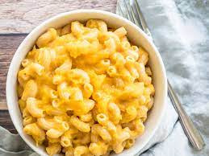

Mac and Cheese

Desciption
Mac and cheese is one of my favorite easy meals
You do not need many materials to make it and you
can change the flavors and cheese to make a plethora of different
types of mac and cheese
Ingredients
- 1 Tablespoon softened butter for baking dish
- 1 pound elbow macaroni
- 4 tablespoon butter, melted for the breadcrumb topping
- 1/2 cup breadcrumbs or Ritz
- 4 tablespoon butter for the cheese sauce
- 4 tablespoon all-purpose flour
- 2 cups milk
- 1 teaspoon seasoned salt
- 1/4 teaspoon cayenne pepper or fav seasoning
- 2 cup grated sharp cheddar cheese
Steps
- preheat oven to 350 degrees
- bring large pasta pot filled with water
to a boil, sprinkle pinches of salt
- cook pasta for 2 minutes shorter
- rub melted butter on inside of baking dish
- in a small dish, melt 4 tablespoons of butter
afterwards mix in crumbs until all are moist
- drain noodles and set aside
- in empty pasta pot melt butter over medium heat
whisk in flour and continue to stir until mixture bubbles
and turns light brown
- while whisking constantly pour milk slowly into pot
until sauce has thickened and no lumps remain
- add seasoning and cheese whisking until everything is melted
- mix all materials into baking dish topping it with the crumbs
- bake 10 minutes on 350
broil 2-3 minutes on lo